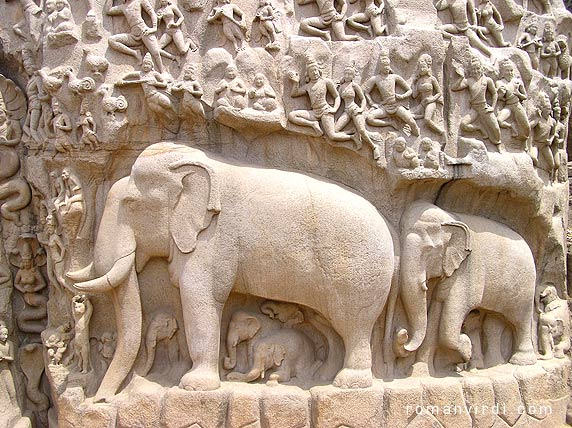

Arjuna's Penance
This is a monumental open air relief which is also an excellent example of monolithic rock style
carving of Pallavas during mid 7th century. This is relief is measured to be 96 feet long and 43 feet high.
This place is enriched with two intriguing legends, one is Arjuna penance and other is descent of the Ganges river.
Historians are however not sure whether any one of the legend corresponds to this place or both.
Arjuna is one the five pandava brothers. He is renowned flawless archer and also a magnificent warrior.
Albiet he was a fine warrior he was in need to possess which is considered to be mightiest weapon of all,
Lord Shiva pasupata to earn glory in war of Mahabharata. According to hindu religion, if one exposes himself
willingly to penance like austerities, he is believed to attain great powers, that even supplants the god power.
So the Lord to stop that person from getting great power, awards the person with the reward they wanted, in this case the puspata.